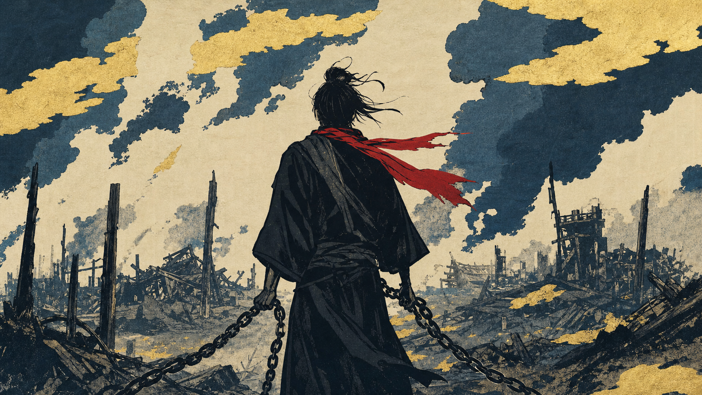

第34話 ・ 台本の内容追加（クラピカの回収）
クラピカを「旅の卦」に繋ぎ直す
ご指摘どおり、クラピカが解説に繋がっていません。原因と、足す1場面＋末尾統合の案です（ビジュアルは既存A15を再利用・作り直しなし）。
いまの穴：ゴン（身軽）とキルア（針を抜く）は処方箋で回収されるのに、クラピカだけ「奪われて出た・復讐に固執」と立てたまま放置。だから解説との繋がりが切れて見えます。

再利用する既存カット A15（焼け跡を背に鎖を握りしめる後ろ姿＝復讐への固執）。新規生成なし。
① 追加する1場面（種明かしの中・卦辞の直後）
🆕 V_05_05b（種明かし）
挿入位置：「旅は小さくあれば通る…しがみつけば危ない」（V_05_05）の直後 → この新場面 → 「旅の卦は自分を変える装置じゃない」（V_05_06）
さっき出てきたクラピカを、思い出してください。一族を奪われた彼が、旅のあいだじゅう握りしめているのは、復讐です。旅の卦が、いちばん危ういと見ているのは、まさに、その握りしめた手のことなんです。
→ これで「しがみつけば危ない」という卦辞が、クラピカという具体例で回収される。3人（ゴン＝向かう／キルア＝逃げる→手放す／クラピカ＝奪われる→握りしめる）が全員、旅の卦に着地します。
② 末尾を1つに統合（32場面の上限を守るため）
✏️ 余韻（V_08_01+V_08_02 を統合）
旧：「逃げて出ても、奪われて出ても、憧れて出ても、自分だけは置いていけません。旅というのは、自分から逃げる旅には、できていないんです。」＋「だったら、身軽に、低く、機嫌よく。連れて行くしかない自分と、うまくやっていく。外の世界でいちばん頼りになるのは、たぶん、それだけです。」
逃げて出ても、奪われて出ても、憧れて出ても、自分だけは置いていけません。旅は、自分から逃げる旅には、できていない。だったら、身軽に、低く、機嫌よく。連れて行くしかない自分と、うまくやっていく。それだけです。
→ 2つの締めを1つに凝縮（独立採点でも「締めの一撃が弱い」と指摘あり＝むしろ強くなる）。これで合計32場面のまま、上限を超えません。
👉 この内容追加で進めてよいですか？
A承認 → 音声追加・再同期・Wan再レンダしてスマホ版を更新
B文言を直す（クラピカの場面・末尾の言い回しを指定）
Cもっと追加したい（別の繋ぎ・尺を増やす等）
承認後の処理：新場面の音声生成→whisper再同期→Wan版再レンダ（A15のWanモーションをA32として再利用）→スマホURL更新。約20分。